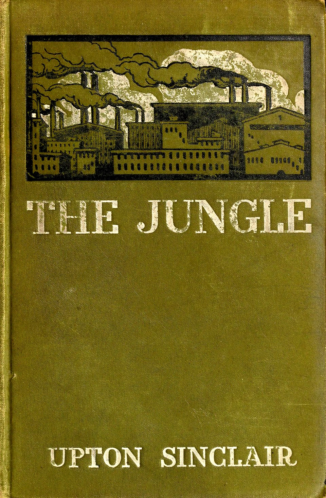
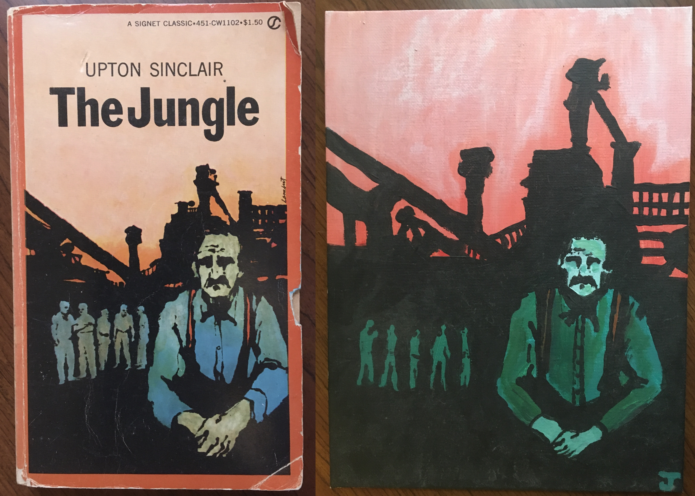
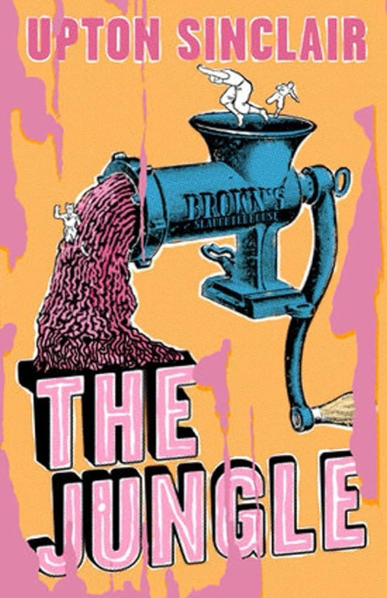

The main plot of The Jungle follows Lithuanian immigrant Jurgis Rudkus, who came to the United States in the hope of living the American dream, and his extended family, which includes Ona, Jurgis’s wife; Elzbieta, Ona’s stepmother; Elzbieta’s six children; Marija, Ona’s cousin; and Dede Rudkus, Jurgis’s father. They all live in a small town named Packingtown in Chicago. The title of Sinclair’s novel describes the savage nature of Packingtown. Jurgis and his family, hoping for opportunity, are instead thrown into a chaotic world that requires them to constantly struggle in order to survive. Packingtown is an urban jungle: savage, unforgiving, and unrelenting. Source


